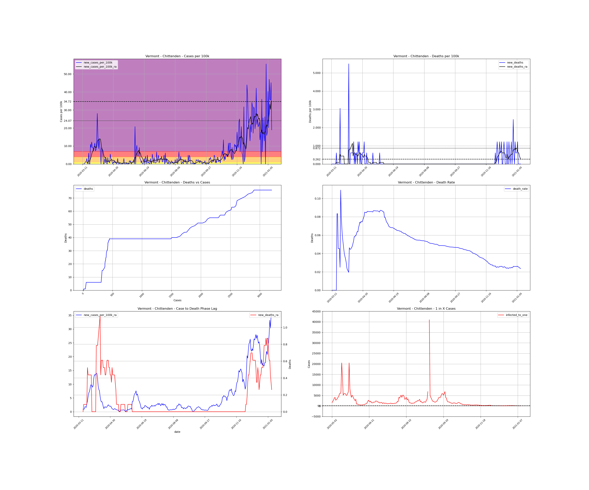
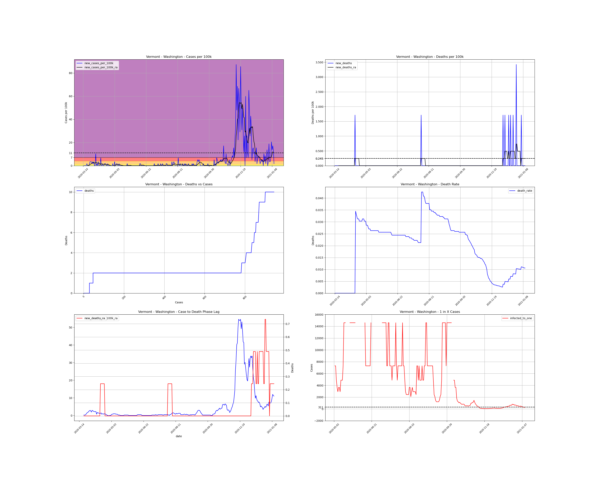
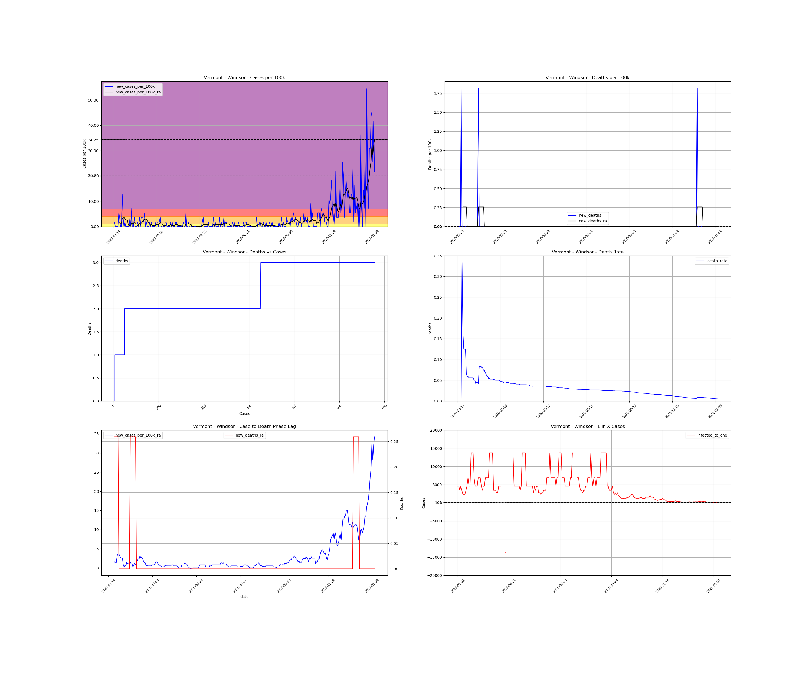

<h1>Vermont Counties</h1><table><tr><td><a #Addison>Addison</a></td></tr><tr><td><a #Bennington>Bennington</a></td></tr><tr><td><a #Caledonia>Caledonia</a></td></tr><tr><td><a #Chittenden>Chittenden</a></td></tr><tr><td><a #Essex>Essex</a></td></tr><tr><td><a #Franklin>Franklin</a></td></tr><tr><td><a #Grand Isle>Grand Isle</a></td></tr><tr><td><a #Lamoille>Lamoille</a></td></tr><tr><td><a #Orange>Orange</a></td></tr><tr><td><a #Orleans>Orleans</a></td></tr><tr><td><a #Rutland>Rutland</a></td></tr><tr><td><a #Washington>Washington</a></td></tr><tr><td><a #Windham>Windham</a></td></tr><tr><td><a #Windsor>Windsor</a></td></tr></table>